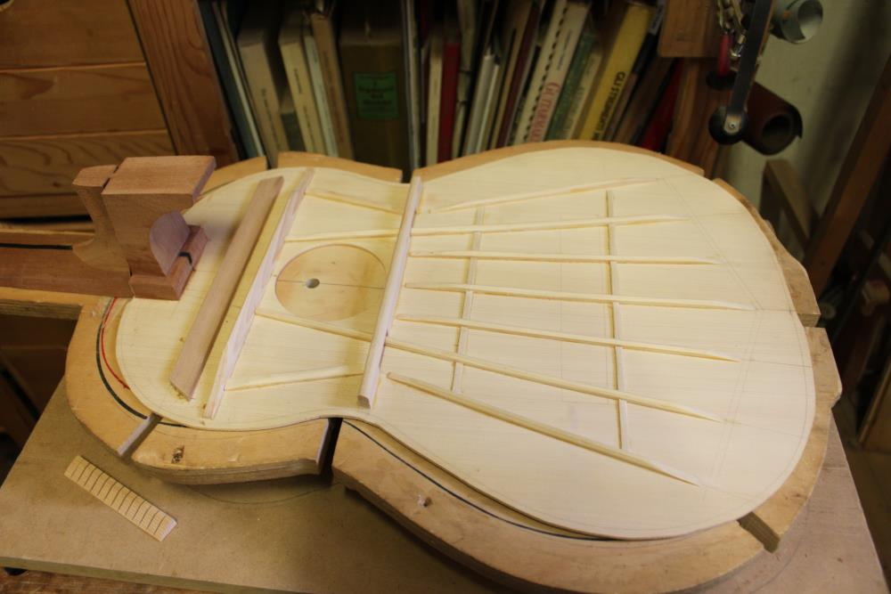

Chitarra Classica Lo Verde
Equilibrio timbrico, comfort e finitura artigianale per studio e concerto.

Chitarra Classica Lo Verde
€ 2.400
Una chitarra pensata per offrire risposta equilibrata, suonabilità confortevole e una timbrica calda e definita.